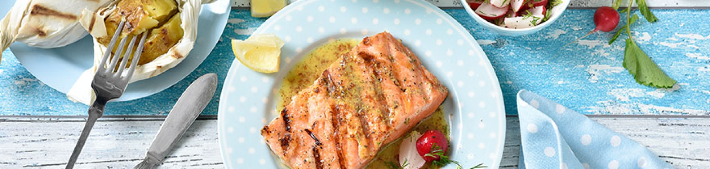

Gegrilltes Lachssteak

Zutaten:
- 4 Lachssteaks
- 1 EL gelbe Senfkörner
- 1 TL schwarze Pfefferkörner
- 1 TL grobes Meersalz
- 1 TL brauner Zucker
- 1 EL Rapsöl
- 2 EL körniger Senf
- 70 ml Orangensaft
- 1,5 EL Agavendicksaft
- 40 ml Rapsöl
- 30 ml Olivenöl
- Salz
- 1,5 TL Zitronensaft
Ran an den Herd!
- Die Lachssteaks abspülen und trocken tupfen. Senfkörner, Pfefferkörner und Salz im Mörser zerdrücken. Zucker dazugeben. Die Lachssteaks auf der Fleischseite damit einreiben und zugedeckt 1 Stunde kühl stellen.
- Für die Sauce Senf, Orangensaft, 1 EL Agavendicksaft, beide Öle, etwas Salz und 1 TL Zitronensaft in ein Glas mit Schraubverschluss geben. Das Glas verschließen und die Zutaten kräftig schütteln. Falls nötig, die Sauce mit Agavendicksaft, Salz und Zitronensaft nachwürzen.
- Einen Teil der Gewürze von den Steaks schaben. Die Steaks dünn mit Öl bestreichen, mit der Fleischseite auf den Grill legen und bei mittlerer Hitze ca. 1 Minute grillen. Die Steaks wenden und weitere 2–3 Minuten auf der Hautseite grillen.
- Die Sauce nochmals schütteln und zu den Steaks servieren.